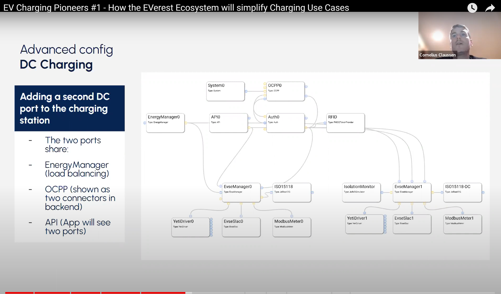

Current Version nightly
You are looking at the documentation for the nightly release of EVerest. See snapshot file for further version mapping. See versions index for other versions.

What Is EVerest¶
EVerest is an open source modular framework for setting up a full stack environment for EV charging.
The modular software architecture fosters customizability and lets you configure your dedicated charging scenarios based on interchangeable modules. All this is glued together by MQTT.
EVerest will help to speed the adoption to e-mobility by utilizing all the open source advantages for the EV charging world. It will also enable new features for local energy management, PV-integration and many more.
The EVerest project was initiated by PIONIX GmbH (Pionix at LinkedIn) to help with the electrification of the mobility sector and is an official project of the Linux Foundation Energy.
EVerest Compass¶
You are currently on the main documentation page of EVerest.
There are quite a few other resources that you might want to check out:
Direct contact¶
Zulip chat¶
On the Zulip instance of Linux Foundation Energy, there are chat channels for EVerest.
This is for thought exchange, for questions and talks about dedicated work on EVerest topics. Feel free to to drop your own questions and dive into communication with other EVerest enthusiasts.
We have created working groups (see below) to focus on special topics in EVerest and get the development communication structured. You will see those working groups as streams in Zulip.
So, the best place to be near development thought exchange is Zulip.
You can find us here: https://lfenergy.zulipchat.com/
Mailing list¶
Another way to connect to the steadily growing EVerest community is the mailing list.
We have set up two separate mailing lists:
The most important one is the announcement list. Important news or events all around EVerest are shared there. Subscribe here:
 EVerest announcement list
.
EVerest announcement list
.Optionally, you can subscribe to the detailed mailing list with all developer’s exchange:
EVerest mailing list
.
If you do not want to ask your questions in the Zulip chat, you can use the detailed mailinglist to get your questions answered.
Weekly tech meetup and working groups¶
Since the beginning of 2024 we organize our community and development exchange in the format of working groups. The formerly called weekly tech meetup is now one of those working groups. Now, we simply call it “General Working Group”.
Those are all EVerest working groups:
General (for general topics and to get a common ground for updates from the other working groups)
Car Communication (car/charger communication with topics ISO 15118, EXI, SLAC, CHAdeMO etc)
Cloud Communication (communication between charger and backends in cloud with topics OCPP 1.6, 2.0.1, 2.1 etc)
EVerest Framework and Tools (framework topics and tools like edm, ev-cli etc)
Testing and CI
You might wanna join us in the general working group to meet the community without having focused on a special area of EVerest (yet).
For the General Working Group, meet us here each Tuesday at 4pm in CE(S)T time-zone:
To see links to the meetings of all other working groups, see the publicly available LFE EVerest calendar:
https://zoom-lfx.platform.linuxfoundation.org/meetings/everest
Additionally, you might want to join the working group chat channels in Zulip. See the “Zulip chat” section above to see how to get there!
Special Interest Group “EV Charging”¶
Linux Foundation Energy (LFE) is growing. As the EVerest project (and all other LFE projects) have several connecting points to other projects in the same field, a Special Interest Group (SIG) has been created for
exchanging thoughts and experiences,
share best practices,
discuss industry trends and
tackle challenges together.
If you work in the field of EV charging and you are interested in open source software / projects, join the SIG calls. They are free to access and open to all interested parties.
Join the mailing list: https://lists.lfenergy.org/g/ev-charging-sig
Directly access via Zoom: https://zoom-lfx.platform.linuxfoundation.org/meeting/92797425199
1:1 meetup¶
If you do not find your way into the EVerest community, let’s try to help you. Just book a meeting via the link below. Of course, this is optionally. You are allowed to join the Zulip sessions and also take part in the working group meetings without registration.
Hint
In this 1:1 meetup, we will not talk about technical topics. We will rather see where you should start in the community if you have problems entering the meetups or the discussions.
Just book a 30-minute meetup here: https://calendly.com/manuel-ziegler-pionix/30min
Tech resources about EVerest¶
Find the source code, current Pull Requests and an issue tracking on our home at EVerest repositories on GitHub .
For getting at least a rough overview of the things we already implemented and what is planned for the near future, see our roadmap on GitHub .
With our
 YouTube Channel
channel, you can stay up-to-date with webinars and get
insights from the Technical Steering Committee recordings.
YouTube Channel
channel, you can stay up-to-date with webinars and get
insights from the Technical Steering Committee recordings.
And last but not least, also have a look at section FAQ And Best Practices in this documentation page to find topics that sometimes people get stuck with.
Find Your Way Into EVerest Development¶
If you want to choose video rather than text and code for a quick dive-in, have a look at our webinar first:
Click for watching on YouTube: Webinar: How the EVerest Ecosystem will simplify Charging Use Cases
We prepared a path to get step by step into the EVerest world. It will lead you from a high level overview right into understanding how to implement modules for your dedicated hardware scenarios or developer use cases.
To walk this path, simply read on and follow the table of contents below.
Table Of Contents¶
But now let’s dive in the EVerest journey to get you on board. Start on top level with the first chapter and walk the path down to your first module implementation.
- 1. EVerest Framework
- 2. Prepare Your Development Environment
- 3. A Kind Of Quick Guide To EVerest
- 4. EVerest Modules in Detail
- 5. EVerest Module Configurations
- 6. Bank Card Payment
- 7. Configure Plug&Charge
- 8. EVerest development tools
- 9. Tutorials
- 9.1. How To: Act
- 9.2. Experimental Bazel Support in Everest
- 9.3. How To: Git
- 9.4. How To: Develop on a Mac
- 9.5. How To: OCPP1.6 in EVerest
- 9.6. How To: Plug&Charge with EVerest Software in the loop
- 9.7. How To: Develop New Modules
- 9.8. Tutorial: Simulate EVerest in Software
- 9.9. Docker setup
- 9.10. General Sphinx Information
- 9.11. Sphinx style guide
- 10. Frequently Asked Questions And Best Practices
- 11. Pionix BelayBox
- 12. Snapshot
- 13. EVerest Reference